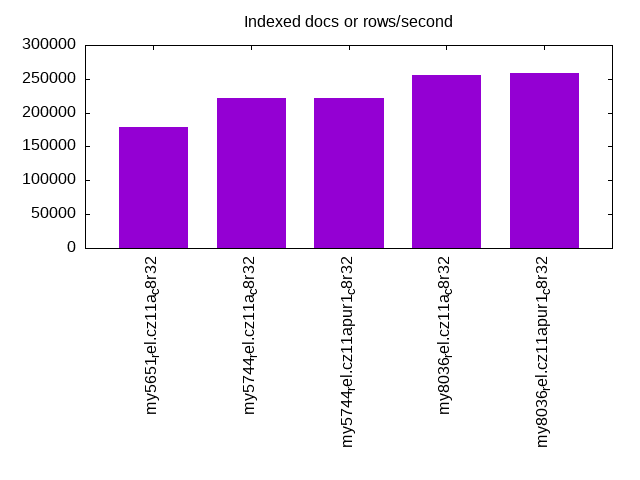
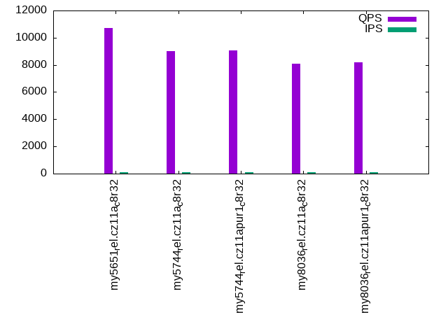
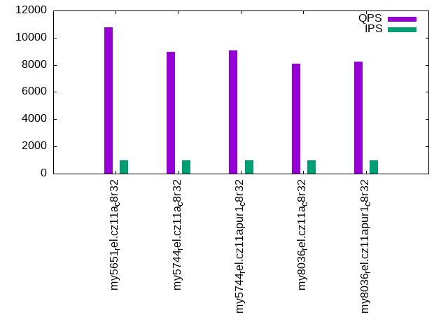

This is a report for the insert benchmark with 50M docs and 1 client(s). It is generated by scripts (bash, awk, sed) and Tufte might not be impressed. An overview of the insert benchmark is here and a short update is here. Below, by DBMS, I mean DBMS+version.config. An example is my8020.c10b40 where my means MySQL, 8020 is version 8.0.20 and c10b40 is the name for the configuration file.
The test server has 8 AMD cores, 32G RAM and an NVMe SSD. It is described here as the ASUS PN53. The benchmark was run with 1 client and there were 1 or 3 connections per client (1 for queries or inserts without rate limits, 1+1 for rate limited inserts+deletes). It uses 1 table. It loads 50M rows per table without secondary indexes, creates 3 secondary indexes per table, then inserts 40m+10m rows per table with a delete per insert to avoid growing the table. It then does 6 read+write tests for 1800s each that do queries as fast as possible with 100,100,500,500,1000,1000 inserts/s and the same for deletes/s per client concurrent with the queries. The database is cached in memory. Clients and the DBMS share one server. The per-database configs are in the per-database subdirectories here.
The tested DBMS are:
The numbers are inserts/s for l.i0, l.i1 and l.i2, indexed docs (or rows) /s for l.x and queries/s for qr100, qp100 thru qr1000, qp1000" The values are the average rate over the entire test for inserts (IPS) and queries (QPS). The range of values for IPS and QPS is split into 3 parts: bottom 25%, middle 50%, top 25%. Values in the bottom 25% have a red background, values in the top 25% have a green background and values in the middle have no color. A gray background is used for values that can be ignored because the DBMS did not sustain the target insert rate. Red backgrounds are not used when the minimum value is within 80% of the max value.
| dbms | l.i0 | l.x | l.i1 | l.i2 | qr100 | qp100 | qr500 | qp500 | qr1000 | qp1000 |
|---|---|---|---|---|---|---|---|---|---|---|
| my5651_rel.cz11a_c8r32 | 174216 | 179212 | 29895 | 21142 | 10706 | 8446 | 10693 | 8495 | 10766 | 8592 |
| my5744_rel.cz11a_c8r32 | 150602 | 221239 | 31671 | 21142 | 9031 | 7503 | 9036 | 7420 | 8942 | 7433 |
| my5744_rel.cz11apur1_c8r32 | 157233 | 222223 | 36199 | 23095 | 9074 | 7573 | 9056 | 7514 | 9074 | 7508 |
| my8036_rel.cz11a_c8r32 | 98039 | 255102 | 29218 | 17668 | 8079 | 6002 | 8106 | 5985 | 8081 | 6006 |
| my8036_rel.cz11apur1_c8r32 | 108696 | 259068 | 30960 | 18349 | 8207 | 6109 | 8146 | 6099 | 8230 | 6095 |
This table has relative throughput, throughput for the DBMS relative to the DBMS in the first line, using the absolute throughput from the previous table. Values less than 0.95 have a yellow background. Values greater than 1.05 have a blue background.
| dbms | l.i0 | l.x | l.i1 | l.i2 | qr100 | qp100 | qr500 | qp500 | qr1000 | qp1000 |
|---|---|---|---|---|---|---|---|---|---|---|
| my5651_rel.cz11a_c8r32 | 1.00 | 1.00 | 1.00 | 1.00 | 1.00 | 1.00 | 1.00 | 1.00 | 1.00 | 1.00 |
| my5744_rel.cz11a_c8r32 | 0.86 | 1.23 | 1.06 | 1.00 | 0.84 | 0.89 | 0.85 | 0.87 | 0.83 | 0.87 |
| my5744_rel.cz11apur1_c8r32 | 0.90 | 1.24 | 1.21 | 1.09 | 0.85 | 0.90 | 0.85 | 0.88 | 0.84 | 0.87 |
| my8036_rel.cz11a_c8r32 | 0.56 | 1.42 | 0.98 | 0.84 | 0.75 | 0.71 | 0.76 | 0.70 | 0.75 | 0.70 |
| my8036_rel.cz11apur1_c8r32 | 0.62 | 1.45 | 1.04 | 0.87 | 0.77 | 0.72 | 0.76 | 0.72 | 0.76 | 0.71 |
This lists the average rate of inserts/s for the tests that do inserts concurrent with queries. For such tests the query rate is listed in the table above. The read+write tests are setup so that the insert rate should match the target rate every second. Cells that are not at least 95% of the target have a red background to indicate a failure to satisfy the target.
| dbms | qr100.L1 | qp100.L2 | qr500.L3 | qp500.L4 | qr1000.L5 | qp1000.L6 |
|---|---|---|---|---|---|---|
| my5651_rel.cz11a_c8r32 | 100 | 100 | 499 | 499 | 999 | 999 |
| my5744_rel.cz11a_c8r32 | 100 | 100 | 499 | 499 | 999 | 999 |
| my5744_rel.cz11apur1_c8r32 | 100 | 100 | 499 | 499 | 999 | 999 |
| my8036_rel.cz11a_c8r32 | 100 | 100 | 499 | 499 | 999 | 999 |
| my8036_rel.cz11apur1_c8r32 | 100 | 100 | 499 | 499 | 999 | 999 |
| target | 100 | 100 | 500 | 500 | 1000 | 1000 |
l.i0: load without secondary indexes. Graphs for performance per 1-second interval are here.
Average throughput:
Insert response time histogram: each cell has the percentage of responses that take <= the time in the header and max is the max response time in seconds. For the max column values in the top 25% of the range have a red background and in the bottom 25% of the range have a green background. The red background is not used when the min value is within 80% of the max value.
| dbms | 256us | 1ms | 4ms | 16ms | 64ms | 256ms | 1s | 4s | 16s | gt | max |
|---|---|---|---|---|---|---|---|---|---|---|---|
| my5651_rel.cz11a_c8r32 | 99.693 | 0.242 | 0.053 | 0.010 | 0.001 | 0.149 | |||||
| my5744_rel.cz11a_c8r32 | 99.547 | 0.191 | 0.129 | 0.132 | 0.001 | 0.084 | |||||
| my5744_rel.cz11apur1_c8r32 | 99.560 | 0.177 | 0.132 | 0.130 | 0.001 | 0.144 | |||||
| my8036_rel.cz11a_c8r32 | 86.376 | 13.218 | 0.271 | 0.133 | 0.002 | 0.085 | |||||
| my8036_rel.cz11apur1_c8r32 | 99.249 | 0.367 | 0.252 | 0.131 | 0.002 | 0.079 |
Performance metrics for the DBMS listed above. Some are normalized by throughput, others are not. Legend for results is here.
ips qps rps rmbps wps wmbps rpq rkbpq wpi wkbpi csps cpups cspq cpupq dbgb1 dbgb2 rss maxop p50 p99 tag 174216 0 1526 6.0 749.0 51.5 0.009 0.035 0.004 0.303 20690 21.5 0.119 10 3.3 33.8 4.7 0.149 174800 149339 my5651_rel.cz11a_c8r32 150602 0 0 0.0 665.7 44.9 0.000 0.000 0.004 0.305 15565 19.9 0.103 11 3.3 33.8 5.3 0.084 150334 136751 my5744_rel.cz11a_c8r32 157233 0 0 0.0 695.9 47.0 0.000 0.000 0.004 0.306 16251 20.7 0.103 11 3.3 33.8 5.1 0.144 158029 144243 my5744_rel.cz11apur1_c8r32 98039 0 0 0.0 519.2 31.8 0.000 0.000 0.005 0.333 11433 17.8 0.117 15 3.3 33.9 5.5 0.085 98490 88902 my8036_rel.cz11a_c8r32 108696 0 0 0.0 576.2 35.3 0.000 0.000 0.005 0.333 12490 17.8 0.115 13 3.3 33.9 5.4 0.079 109179 100591 my8036_rel.cz11apur1_c8r32
l.x: create secondary indexes.
Average throughput:
Performance metrics for the DBMS listed above. Some are normalized by throughput, others are not. Legend for results is here.
ips qps rps rmbps wps wmbps rpq rkbpq wpi wkbpi csps cpups cspq cpupq dbgb1 dbgb2 rss maxop p50 p99 tag 179212 0 11 0.0 2467.1 190.4 0.000 0.000 0.014 1.088 3869 11.8 0.022 5 7.0 37.5 8.4 0.002 NA NA my5651_rel.cz11a_c8r32 221239 0 0 0.0 3427.0 220.9 0.000 0.000 0.015 1.023 13512 12.1 0.061 4 7.6 38.1 7.8 0.001 NA NA my5744_rel.cz11a_c8r32 222223 0 0 0.0 3517.9 222.8 0.000 0.000 0.016 1.027 13764 12.1 0.062 4 7.6 38.1 7.8 0.001 NA NA my5744_rel.cz11apur1_c8r32 255102 0 1295 82.0 5643.8 304.4 0.005 0.329 0.022 1.222 18932 40.5 0.074 13 7.6 38.1 8.9 0.002 NA NA my8036_rel.cz11a_c8r32 259068 0 1330 84.2 5274.5 304.2 0.005 0.333 0.020 1.202 18413 40.9 0.071 13 7.6 38.1 9.1 0.002 NA NA my8036_rel.cz11apur1_c8r32
l.i1: continue load after secondary indexes created with 50 inserts per transaction. Graphs for performance per 1-second interval are here.
Average throughput:
Insert response time histogram: each cell has the percentage of responses that take <= the time in the header and max is the max response time in seconds. For the max column values in the top 25% of the range have a red background and in the bottom 25% of the range have a green background. The red background is not used when the min value is within 80% of the max value.
| dbms | 256us | 1ms | 4ms | 16ms | 64ms | 256ms | 1s | 4s | 16s | gt | max |
|---|---|---|---|---|---|---|---|---|---|---|---|
| my5651_rel.cz11a_c8r32 | 3.650 | 93.735 | 2.424 | 0.190 | 0.001 | 0.083 | |||||
| my5744_rel.cz11a_c8r32 | 0.356 | 97.451 | 2.139 | 0.053 | 0.001 | 0.093 | |||||
| my5744_rel.cz11apur1_c8r32 | 0.433 | 97.428 | 2.084 | 0.054 | 0.001 | 0.091 | |||||
| my8036_rel.cz11a_c8r32 | 97.822 | 2.051 | 0.126 | 0.001 | 0.074 | ||||||
| my8036_rel.cz11apur1_c8r32 | 97.843 | 2.025 | 0.131 | 0.001 | 0.097 |
Delete response time histogram: each cell has the percentage of responses that take <= the time in the header and max is the max response time in seconds. For the max column values in the top 25% of the range have a red background and in the bottom 25% of the range have a green background. The red background is not used when the min value is within 80% of the max value.
| dbms | 256us | 1ms | 4ms | 16ms | 64ms | 256ms | 1s | 4s | 16s | gt | max |
|---|---|---|---|---|---|---|---|---|---|---|---|
| my5651_rel.cz11a_c8r32 | 65.418 | 33.131 | 1.300 | 0.150 | 0.001 | 0.083 | |||||
| my5744_rel.cz11a_c8r32 | 57.763 | 40.682 | 1.542 | 0.012 | 0.001 | 0.081 | |||||
| my5744_rel.cz11apur1_c8r32 | 94.026 | 4.227 | 1.734 | 0.013 | 0.001 | 0.091 | |||||
| my8036_rel.cz11a_c8r32 | 30.858 | 67.601 | 1.514 | 0.027 | 0.001 | 0.091 | |||||
| my8036_rel.cz11apur1_c8r32 | 53.232 | 45.212 | 1.524 | 0.031 | nonzero | 0.088 |
Performance metrics for the DBMS listed above. Some are normalized by throughput, others are not. Legend for results is here.
ips qps rps rmbps wps wmbps rpq rkbpq wpi wkbpi csps cpups cspq cpupq dbgb1 dbgb2 rss maxop p50 p99 tag 29895 0 812 3.2 3251.1 131.3 0.027 0.109 0.109 4.499 36545 40.8 1.222 109 10.0 40.5 11.5 0.083 32165 7945 my5651_rel.cz11a_c8r32 31671 0 0 0.0 3598.5 143.7 0.000 0.000 0.114 4.647 27021 45.6 0.853 115 10.1 40.7 12.0 0.093 33463 8545 my5744_rel.cz11a_c8r32 36199 0 0 0.0 4130.5 164.0 0.000 0.000 0.114 4.640 26667 34.3 0.737 76 10.6 41.2 12.6 0.091 38020 10348 my5744_rel.cz11apur1_c8r32 29218 0 166 2.6 4754.1 176.3 0.006 0.091 0.163 6.179 48213 35.3 1.650 97 10.4 41.3 12.4 0.074 31266 3897 my8036_rel.cz11a_c8r32 30960 0 175 2.7 4996.7 184.5 0.006 0.091 0.161 6.104 27393 34.3 0.885 89 10.6 41.6 12.7 0.097 33264 3946 my8036_rel.cz11apur1_c8r32
l.i2: continue load after secondary indexes created with 5 inserts per transaction. Graphs for performance per 1-second interval are here.
Average throughput:
Insert response time histogram: each cell has the percentage of responses that take <= the time in the header and max is the max response time in seconds. For the max column values in the top 25% of the range have a red background and in the bottom 25% of the range have a green background. The red background is not used when the min value is within 80% of the max value.
| dbms | 256us | 1ms | 4ms | 16ms | 64ms | 256ms | 1s | 4s | 16s | gt | max |
|---|---|---|---|---|---|---|---|---|---|---|---|
| my5651_rel.cz11a_c8r32 | 84.632 | 15.215 | 0.019 | 0.130 | 0.005 | nonzero | 0.071 | ||||
| my5744_rel.cz11a_c8r32 | 85.724 | 14.078 | 0.055 | 0.140 | 0.003 | nonzero | 0.088 | ||||
| my5744_rel.cz11apur1_c8r32 | 96.579 | 3.270 | 0.008 | 0.139 | 0.003 | nonzero | 0.100 | ||||
| my8036_rel.cz11a_c8r32 | 69.276 | 30.566 | 0.015 | 0.140 | 0.001 | nonzero | 0.101 | ||||
| my8036_rel.cz11apur1_c8r32 | 77.509 | 22.345 | 0.008 | 0.137 | 0.001 | 0.060 |
Delete response time histogram: each cell has the percentage of responses that take <= the time in the header and max is the max response time in seconds. For the max column values in the top 25% of the range have a red background and in the bottom 25% of the range have a green background. The red background is not used when the min value is within 80% of the max value.
| dbms | 256us | 1ms | 4ms | 16ms | 64ms | 256ms | 1s | 4s | 16s | gt | max |
|---|---|---|---|---|---|---|---|---|---|---|---|
| my5651_rel.cz11a_c8r32 | 96.033 | 3.815 | 0.018 | 0.130 | 0.005 | nonzero | 0.071 | ||||
| my5744_rel.cz11a_c8r32 | 89.587 | 10.268 | 0.010 | 0.135 | 0.001 | nonzero | 0.088 | ||||
| my5744_rel.cz11apur1_c8r32 | 98.974 | 0.885 | 0.006 | 0.135 | 0.001 | nonzero | 0.100 | ||||
| my8036_rel.cz11a_c8r32 | 80.631 | 19.223 | 0.010 | 0.134 | 0.001 | nonzero | 0.101 | ||||
| my8036_rel.cz11apur1_c8r32 | 92.298 | 7.564 | 0.005 | 0.132 | 0.001 | 0.053 |
Performance metrics for the DBMS listed above. Some are normalized by throughput, others are not. Legend for results is here.
ips qps rps rmbps wps wmbps rpq rkbpq wpi wkbpi csps cpups cspq cpupq dbgb1 dbgb2 rss maxop p50 p99 tag 21142 0 3789 14.8 2189.2 82.1 0.179 0.717 0.104 3.976 174469 41.6 8.252 157 10.3 40.8 11.8 0.071 21217 19869 my5651_rel.cz11a_c8r32 21142 0 0 0.0 2163.2 82.3 0.000 0.000 0.102 3.986 85403 40.2 4.040 152 10.4 40.9 12.2 0.088 21211 20314 my5744_rel.cz11a_c8r32 23095 0 0 0.0 2430.3 91.5 0.000 0.000 0.105 4.058 91896 34.4 3.979 119 10.9 41.4 12.9 0.100 23220 21077 my5744_rel.cz11apur1_c8r32 17668 0 28 0.4 2478.4 86.3 0.002 0.025 0.140 5.002 86356 34.2 4.888 155 10.6 41.5 12.9 0.101 17731 16767 my8036_rel.cz11a_c8r32 18349 0 28 0.4 2630.8 91.0 0.002 0.025 0.143 5.077 75403 33.4 4.109 146 10.9 41.8 13.2 0.060 18370 17456 my8036_rel.cz11apur1_c8r32
qr100.L1: range queries with 100 insert/s per client. Graphs for performance per 1-second interval are here.
Average throughput:
Query response time histogram: each cell has the percentage of responses that take <= the time in the header and max is the max response time in seconds. For max values in the top 25% of the range have a red background and in the bottom 25% of the range have a green background. The red background is not used when the min value is within 80% of the max value.
| dbms | 256us | 1ms | 4ms | 16ms | 64ms | 256ms | 1s | 4s | 16s | gt | max |
|---|---|---|---|---|---|---|---|---|---|---|---|
| my5651_rel.cz11a_c8r32 | 99.937 | 0.061 | nonzero | 0.001 | nonzero | 0.024 | |||||
| my5744_rel.cz11a_c8r32 | 99.964 | 0.036 | nonzero | nonzero | 0.010 | ||||||
| my5744_rel.cz11apur1_c8r32 | 99.997 | 0.003 | nonzero | nonzero | 0.010 | ||||||
| my8036_rel.cz11a_c8r32 | 99.935 | 0.065 | nonzero | 0.001 | |||||||
| my8036_rel.cz11apur1_c8r32 | 99.979 | 0.021 | nonzero | 0.002 |
Insert response time histogram: each cell has the percentage of responses that take <= the time in the header and max is the max response time in seconds. For max values in the top 25% of the range have a red background and in the bottom 25% of the range have a green background. The red background is not used when the min value is within 80% of the max value.
| dbms | 256us | 1ms | 4ms | 16ms | 64ms | 256ms | 1s | 4s | 16s | gt | max |
|---|---|---|---|---|---|---|---|---|---|---|---|
| my5651_rel.cz11a_c8r32 | 0.306 | 91.250 | 6.139 | 2.306 | 0.059 | ||||||
| my5744_rel.cz11a_c8r32 | 0.028 | 99.556 | 0.417 | 0.013 | |||||||
| my5744_rel.cz11apur1_c8r32 | 0.917 | 98.889 | 0.194 | 0.011 | |||||||
| my8036_rel.cz11a_c8r32 | 99.194 | 0.778 | 0.028 | 0.024 | |||||||
| my8036_rel.cz11apur1_c8r32 | 99.917 | 0.083 | 0.010 |
Delete response time histogram: each cell has the percentage of responses that take <= the time in the header and max is the max response time in seconds. For max values in the top 25% of the range have a red background and in the bottom 25% of the range have a green background. The red background is not used when the min value is within 80% of the max value.
| dbms | 256us | 1ms | 4ms | 16ms | 64ms | 256ms | 1s | 4s | 16s | gt | max |
|---|---|---|---|---|---|---|---|---|---|---|---|
| my5651_rel.cz11a_c8r32 | 16.111 | 75.222 | 6.556 | 2.111 | 0.038 | ||||||
| my5744_rel.cz11a_c8r32 | 40.500 | 59.194 | 0.306 | 0.012 | |||||||
| my5744_rel.cz11apur1_c8r32 | 53.250 | 46.583 | 0.167 | 0.008 | |||||||
| my8036_rel.cz11a_c8r32 | 17.917 | 81.361 | 0.667 | 0.056 | 0.023 | ||||||
| my8036_rel.cz11apur1_c8r32 | 48.444 | 51.500 | 0.056 | 0.007 |
Performance metrics for the DBMS listed above. Some are normalized by throughput, others are not. Legend for results is here.
ips qps rps rmbps wps wmbps rpq rkbpq wpi wkbpi csps cpups cspq cpupq dbgb1 dbgb2 rss maxop p50 p99 tag 100 10706 0 0.0 257.4 7.2 0.000 0.000 2.579 73.364 41770 12.7 3.902 95 10.3 40.8 11.8 0.024 10721 10451 my5651_rel.cz11a_c8r32 100 9031 0 0.0 151.9 4.2 0.000 0.000 1.522 42.686 35111 12.6 3.888 112 10.4 40.9 12.2 0.010 9030 8922 my5744_rel.cz11a_c8r32 100 9074 0 0.0 196.1 5.4 0.000 0.000 1.965 55.259 35416 12.6 3.903 111 10.9 41.4 12.9 0.010 9078 9001 my5744_rel.cz11apur1_c8r32 100 8079 0 0.0 209.5 5.3 0.000 0.000 2.099 53.982 31960 12.5 3.956 124 10.6 41.5 12.9 0.001 8087 7991 my8036_rel.cz11a_c8r32 100 8207 0 0.0 181.5 4.6 0.000 0.000 1.818 46.833 32270 12.5 3.932 122 10.9 41.8 13.2 0.002 8215 8151 my8036_rel.cz11apur1_c8r32
qp100.L2: point queries with 100 insert/s per client. Graphs for performance per 1-second interval are here.
Average throughput:
Query response time histogram: each cell has the percentage of responses that take <= the time in the header and max is the max response time in seconds. For max values in the top 25% of the range have a red background and in the bottom 25% of the range have a green background. The red background is not used when the min value is within 80% of the max value.
| dbms | 256us | 1ms | 4ms | 16ms | 64ms | 256ms | 1s | 4s | 16s | gt | max |
|---|---|---|---|---|---|---|---|---|---|---|---|
| my5651_rel.cz11a_c8r32 | 99.889 | 0.111 | nonzero | 0.001 | |||||||
| my5744_rel.cz11a_c8r32 | 99.839 | 0.161 | nonzero | 0.001 | |||||||
| my5744_rel.cz11apur1_c8r32 | 99.985 | 0.015 | nonzero | 0.003 | |||||||
| my8036_rel.cz11a_c8r32 | 99.618 | 0.381 | nonzero | 0.002 | |||||||
| my8036_rel.cz11apur1_c8r32 | 99.855 | 0.145 | nonzero | 0.002 |
Insert response time histogram: each cell has the percentage of responses that take <= the time in the header and max is the max response time in seconds. For max values in the top 25% of the range have a red background and in the bottom 25% of the range have a green background. The red background is not used when the min value is within 80% of the max value.
| dbms | 256us | 1ms | 4ms | 16ms | 64ms | 256ms | 1s | 4s | 16s | gt | max |
|---|---|---|---|---|---|---|---|---|---|---|---|
| my5651_rel.cz11a_c8r32 | 99.278 | 0.528 | 0.194 | 0.026 | |||||||
| my5744_rel.cz11a_c8r32 | 99.528 | 0.472 | 0.013 | ||||||||
| my5744_rel.cz11apur1_c8r32 | 99.694 | 0.306 | 0.010 | ||||||||
| my8036_rel.cz11a_c8r32 | 99.583 | 0.417 | 0.012 | ||||||||
| my8036_rel.cz11apur1_c8r32 | 99.833 | 0.167 | 0.011 |
Delete response time histogram: each cell has the percentage of responses that take <= the time in the header and max is the max response time in seconds. For max values in the top 25% of the range have a red background and in the bottom 25% of the range have a green background. The red background is not used when the min value is within 80% of the max value.
| dbms | 256us | 1ms | 4ms | 16ms | 64ms | 256ms | 1s | 4s | 16s | gt | max |
|---|---|---|---|---|---|---|---|---|---|---|---|
| my5651_rel.cz11a_c8r32 | 3.528 | 95.778 | 0.528 | 0.167 | 0.025 | ||||||
| my5744_rel.cz11a_c8r32 | 18.028 | 81.528 | 0.444 | 0.011 | |||||||
| my5744_rel.cz11apur1_c8r32 | 49.000 | 50.778 | 0.222 | 0.012 | |||||||
| my8036_rel.cz11a_c8r32 | 0.083 | 99.500 | 0.417 | 0.012 | |||||||
| my8036_rel.cz11apur1_c8r32 | 0.861 | 99.028 | 0.111 | 0.007 |
Performance metrics for the DBMS listed above. Some are normalized by throughput, others are not. Legend for results is here.
ips qps rps rmbps wps wmbps rpq rkbpq wpi wkbpi csps cpups cspq cpupq dbgb1 dbgb2 rss maxop p50 p99 tag 100 8446 0 0.0 2.4 0.1 0.000 0.000 0.024 1.220 33831 12.9 4.005 122 10.3 40.8 11.8 0.001 8422 7704 my5651_rel.cz11a_c8r32 100 7503 0 0.0 45.4 1.2 0.000 0.000 0.455 12.382 30301 12.7 4.038 135 10.4 40.9 12.2 0.001 7527 6920 my5744_rel.cz11a_c8r32 100 7573 0 0.0 61.9 1.7 0.000 0.000 0.620 16.994 30667 12.6 4.049 133 10.9 41.4 12.9 0.003 7584 7384 my5744_rel.cz11apur1_c8r32 100 6002 0 0.0 54.6 1.4 0.000 0.000 0.547 14.289 24572 13.1 4.094 175 10.6 41.5 12.9 0.002 6009 5722 my8036_rel.cz11a_c8r32 100 6109 0 0.0 53.8 1.4 0.000 0.000 0.539 14.211 24889 13.1 4.074 172 10.9 41.8 13.2 0.002 6110 5961 my8036_rel.cz11apur1_c8r32
qr500.L3: range queries with 500 insert/s per client. Graphs for performance per 1-second interval are here.
Average throughput:
Query response time histogram: each cell has the percentage of responses that take <= the time in the header and max is the max response time in seconds. For max values in the top 25% of the range have a red background and in the bottom 25% of the range have a green background. The red background is not used when the min value is within 80% of the max value.
| dbms | 256us | 1ms | 4ms | 16ms | 64ms | 256ms | 1s | 4s | 16s | gt | max |
|---|---|---|---|---|---|---|---|---|---|---|---|
| my5651_rel.cz11a_c8r32 | 99.946 | 0.053 | nonzero | nonzero | 0.010 | ||||||
| my5744_rel.cz11a_c8r32 | 99.952 | 0.048 | nonzero | 0.004 | |||||||
| my5744_rel.cz11apur1_c8r32 | 99.994 | 0.006 | nonzero | 0.002 | |||||||
| my8036_rel.cz11a_c8r32 | 99.916 | 0.084 | nonzero | 0.002 | |||||||
| my8036_rel.cz11apur1_c8r32 | 99.975 | 0.025 | nonzero | 0.002 |
Insert response time histogram: each cell has the percentage of responses that take <= the time in the header and max is the max response time in seconds. For max values in the top 25% of the range have a red background and in the bottom 25% of the range have a green background. The red background is not used when the min value is within 80% of the max value.
| dbms | 256us | 1ms | 4ms | 16ms | 64ms | 256ms | 1s | 4s | 16s | gt | max |
|---|---|---|---|---|---|---|---|---|---|---|---|
| my5651_rel.cz11a_c8r32 | 13.600 | 83.883 | 2.394 | 0.122 | 0.022 | ||||||
| my5744_rel.cz11a_c8r32 | 1.217 | 98.544 | 0.239 | 0.013 | |||||||
| my5744_rel.cz11apur1_c8r32 | 5.694 | 93.989 | 0.317 | 0.013 | |||||||
| my8036_rel.cz11a_c8r32 | 99.817 | 0.183 | 0.015 | ||||||||
| my8036_rel.cz11apur1_c8r32 | 99.856 | 0.133 | 0.011 | 0.023 |
Delete response time histogram: each cell has the percentage of responses that take <= the time in the header and max is the max response time in seconds. For max values in the top 25% of the range have a red background and in the bottom 25% of the range have a green background. The red background is not used when the min value is within 80% of the max value.
| dbms | 256us | 1ms | 4ms | 16ms | 64ms | 256ms | 1s | 4s | 16s | gt | max |
|---|---|---|---|---|---|---|---|---|---|---|---|
| my5651_rel.cz11a_c8r32 | 34.933 | 62.567 | 2.383 | 0.117 | 0.021 | ||||||
| my5744_rel.cz11a_c8r32 | 85.106 | 14.678 | 0.217 | 0.013 | |||||||
| my5744_rel.cz11apur1_c8r32 | 86.489 | 13.239 | 0.272 | 0.011 | |||||||
| my8036_rel.cz11a_c8r32 | 37.844 | 62.033 | 0.122 | 0.014 | |||||||
| my8036_rel.cz11apur1_c8r32 | 82.972 | 16.917 | 0.106 | 0.006 | 0.023 |
Performance metrics for the DBMS listed above. Some are normalized by throughput, others are not. Legend for results is here.
ips qps rps rmbps wps wmbps rpq rkbpq wpi wkbpi csps cpups cspq cpupq dbgb1 dbgb2 rss maxop p50 p99 tag 499 10693 4 0.0 6.0 0.6 0.000 0.001 0.012 1.149 41277 13.3 3.860 100 10.3 40.8 11.8 0.010 10708 10565 my5651_rel.cz11a_c8r32 499 9036 0 0.0 121.0 3.7 0.000 0.000 0.242 7.496 35129 13.1 3.888 116 10.4 40.9 12.2 0.004 9030 8938 my5744_rel.cz11a_c8r32 499 9056 0 0.0 117.9 3.6 0.000 0.000 0.236 7.302 35194 12.9 3.886 114 10.9 41.4 12.9 0.002 9062 8998 my5744_rel.cz11apur1_c8r32 499 8106 0 0.0 127.5 3.7 0.000 0.000 0.255 7.531 32101 13.0 3.960 128 10.6 41.5 12.9 0.002 8103 8023 my8036_rel.cz11a_c8r32 499 8146 0 0.0 125.5 3.6 0.000 0.000 0.251 7.436 31964 12.9 3.924 127 10.9 41.8 13.2 0.002 8151 8103 my8036_rel.cz11apur1_c8r32
qp500.L4: point queries with 500 insert/s per client. Graphs for performance per 1-second interval are here.
Average throughput:
Query response time histogram: each cell has the percentage of responses that take <= the time in the header and max is the max response time in seconds. For max values in the top 25% of the range have a red background and in the bottom 25% of the range have a green background. The red background is not used when the min value is within 80% of the max value.
| dbms | 256us | 1ms | 4ms | 16ms | 64ms | 256ms | 1s | 4s | 16s | gt | max |
|---|---|---|---|---|---|---|---|---|---|---|---|
| my5651_rel.cz11a_c8r32 | 99.850 | 0.147 | 0.002 | 0.002 | 0.010 | ||||||
| my5744_rel.cz11a_c8r32 | 99.813 | 0.186 | nonzero | nonzero | 0.006 | ||||||
| my5744_rel.cz11apur1_c8r32 | 99.976 | 0.024 | nonzero | 0.002 | |||||||
| my8036_rel.cz11a_c8r32 | 99.535 | 0.465 | nonzero | 0.002 | |||||||
| my8036_rel.cz11apur1_c8r32 | 99.792 | 0.208 | nonzero | 0.003 |
Insert response time histogram: each cell has the percentage of responses that take <= the time in the header and max is the max response time in seconds. For max values in the top 25% of the range have a red background and in the bottom 25% of the range have a green background. The red background is not used when the min value is within 80% of the max value.
| dbms | 256us | 1ms | 4ms | 16ms | 64ms | 256ms | 1s | 4s | 16s | gt | max |
|---|---|---|---|---|---|---|---|---|---|---|---|
| my5651_rel.cz11a_c8r32 | 10.189 | 80.528 | 9.217 | 0.067 | 0.022 | ||||||
| my5744_rel.cz11a_c8r32 | 0.344 | 99.444 | 0.206 | 0.006 | 0.017 | ||||||
| my5744_rel.cz11apur1_c8r32 | 1.928 | 97.872 | 0.200 | 0.012 | |||||||
| my8036_rel.cz11a_c8r32 | 99.911 | 0.089 | 0.014 | ||||||||
| my8036_rel.cz11apur1_c8r32 | 99.822 | 0.172 | 0.006 | 0.024 |
Delete response time histogram: each cell has the percentage of responses that take <= the time in the header and max is the max response time in seconds. For max values in the top 25% of the range have a red background and in the bottom 25% of the range have a green background. The red background is not used when the min value is within 80% of the max value.
| dbms | 256us | 1ms | 4ms | 16ms | 64ms | 256ms | 1s | 4s | 16s | gt | max |
|---|---|---|---|---|---|---|---|---|---|---|---|
| my5651_rel.cz11a_c8r32 | 13.944 | 76.822 | 9.200 | 0.033 | 0.022 | ||||||
| my5744_rel.cz11a_c8r32 | 64.583 | 35.233 | 0.183 | 0.012 | |||||||
| my5744_rel.cz11apur1_c8r32 | 84.383 | 15.444 | 0.172 | 0.007 | |||||||
| my8036_rel.cz11a_c8r32 | 12.261 | 87.672 | 0.067 | 0.013 | |||||||
| my8036_rel.cz11apur1_c8r32 | 60.550 | 39.311 | 0.133 | 0.006 | 0.023 |
Performance metrics for the DBMS listed above. Some are normalized by throughput, others are not. Legend for results is here.
ips qps rps rmbps wps wmbps rpq rkbpq wpi wkbpi csps cpups cspq cpupq dbgb1 dbgb2 rss maxop p50 p99 tag 499 8495 16 0.1 10.6 0.7 0.002 0.008 0.021 1.404 34402 12.9 4.050 121 10.3 40.8 11.8 0.010 8539 7607 my5651_rel.cz11a_c8r32 499 7420 0 0.0 47.2 1.6 0.000 0.000 0.095 3.292 30070 13.4 4.053 144 10.4 40.9 12.2 0.006 7432 6920 my5744_rel.cz11a_c8r32 499 7514 0 0.0 43.8 1.5 0.000 0.000 0.088 3.081 30473 13.3 4.056 142 10.9 41.4 12.9 0.002 7528 7339 my5744_rel.cz11apur1_c8r32 499 5985 0 0.0 48.2 1.7 0.000 0.000 0.097 3.523 24762 13.2 4.138 176 10.6 41.6 12.9 0.002 5993 5737 my8036_rel.cz11a_c8r32 499 6099 0 0.0 53.8 1.8 0.000 0.000 0.108 3.790 24928 13.2 4.087 173 10.9 41.8 13.2 0.003 6105 5946 my8036_rel.cz11apur1_c8r32
qr1000.L5: range queries with 1000 insert/s per client. Graphs for performance per 1-second interval are here.
Average throughput:
Query response time histogram: each cell has the percentage of responses that take <= the time in the header and max is the max response time in seconds. For max values in the top 25% of the range have a red background and in the bottom 25% of the range have a green background. The red background is not used when the min value is within 80% of the max value.
| dbms | 256us | 1ms | 4ms | 16ms | 64ms | 256ms | 1s | 4s | 16s | gt | max |
|---|---|---|---|---|---|---|---|---|---|---|---|
| my5651_rel.cz11a_c8r32 | 99.936 | 0.061 | 0.001 | 0.002 | 0.012 | ||||||
| my5744_rel.cz11a_c8r32 | 99.937 | 0.063 | nonzero | nonzero | 0.004 | ||||||
| my5744_rel.cz11apur1_c8r32 | 99.991 | 0.009 | nonzero | 0.002 | |||||||
| my8036_rel.cz11a_c8r32 | 99.900 | 0.100 | nonzero | 0.002 | |||||||
| my8036_rel.cz11apur1_c8r32 | 99.969 | 0.031 | nonzero | nonzero | 0.004 |
Insert response time histogram: each cell has the percentage of responses that take <= the time in the header and max is the max response time in seconds. For max values in the top 25% of the range have a red background and in the bottom 25% of the range have a green background. The red background is not used when the min value is within 80% of the max value.
| dbms | 256us | 1ms | 4ms | 16ms | 64ms | 256ms | 1s | 4s | 16s | gt | max |
|---|---|---|---|---|---|---|---|---|---|---|---|
| my5651_rel.cz11a_c8r32 | 14.989 | 79.611 | 5.364 | 0.036 | 0.022 | ||||||
| my5744_rel.cz11a_c8r32 | 3.197 | 96.647 | 0.156 | 0.014 | |||||||
| my5744_rel.cz11apur1_c8r32 | 9.247 | 90.578 | 0.175 | 0.010 | |||||||
| my8036_rel.cz11a_c8r32 | 99.756 | 0.242 | 0.003 | 0.022 | |||||||
| my8036_rel.cz11apur1_c8r32 | 99.822 | 0.172 | 0.006 | 0.024 |
Delete response time histogram: each cell has the percentage of responses that take <= the time in the header and max is the max response time in seconds. For max values in the top 25% of the range have a red background and in the bottom 25% of the range have a green background. The red background is not used when the min value is within 80% of the max value.
| dbms | 256us | 1ms | 4ms | 16ms | 64ms | 256ms | 1s | 4s | 16s | gt | max |
|---|---|---|---|---|---|---|---|---|---|---|---|
| my5651_rel.cz11a_c8r32 | 22.928 | 71.864 | 5.189 | 0.019 | 0.022 | ||||||
| my5744_rel.cz11a_c8r32 | 89.325 | 10.533 | 0.142 | 0.014 | |||||||
| my5744_rel.cz11apur1_c8r32 | 90.347 | 9.522 | 0.131 | 0.007 | |||||||
| my8036_rel.cz11a_c8r32 | 42.083 | 57.731 | 0.183 | 0.003 | 0.020 | ||||||
| my8036_rel.cz11apur1_c8r32 | 78.578 | 21.286 | 0.136 | 0.013 |
Performance metrics for the DBMS listed above. Some are normalized by throughput, others are not. Legend for results is here.
ips qps rps rmbps wps wmbps rpq rkbpq wpi wkbpi csps cpups cspq cpupq dbgb1 dbgb2 rss maxop p50 p99 tag 999 10766 32 0.1 438.0 13.0 0.003 0.012 0.439 13.287 43269 13.8 4.019 103 10.3 40.8 11.8 0.012 10772 10565 my5651_rel.cz11a_c8r32 999 8942 0 0.0 134.7 4.5 0.000 0.000 0.135 4.586 34981 13.6 3.912 122 10.4 40.9 12.2 0.004 8940 8854 my5744_rel.cz11a_c8r32 999 9074 0 0.0 139.4 4.6 0.000 0.000 0.140 4.708 35500 13.5 3.912 119 10.9 41.4 12.9 0.002 9078 9002 my5744_rel.cz11apur1_c8r32 999 8081 0 0.0 194.0 5.9 0.000 0.000 0.194 6.068 32624 13.6 4.037 135 10.6 41.6 12.9 0.002 8087 8007 my8036_rel.cz11a_c8r32 999 8230 0 0.0 195.1 5.9 0.000 0.000 0.195 6.096 32664 13.4 3.969 130 10.9 41.8 13.2 0.004 8231 8183 my8036_rel.cz11apur1_c8r32
qp1000.L6: point queries with 1000 insert/s per client. Graphs for performance per 1-second interval are here.
Average throughput:
Query response time histogram: each cell has the percentage of responses that take <= the time in the header and max is the max response time in seconds. For max values in the top 25% of the range have a red background and in the bottom 25% of the range have a green background. The red background is not used when the min value is within 80% of the max value.
| dbms | 256us | 1ms | 4ms | 16ms | 64ms | 256ms | 1s | 4s | 16s | gt | max |
|---|---|---|---|---|---|---|---|---|---|---|---|
| my5651_rel.cz11a_c8r32 | 99.778 | 0.216 | 0.003 | 0.002 | 0.010 | ||||||
| my5744_rel.cz11a_c8r32 | 99.748 | 0.252 | nonzero | 0.002 | |||||||
| my5744_rel.cz11apur1_c8r32 | 99.967 | 0.033 | nonzero | nonzero | 0.004 | ||||||
| my8036_rel.cz11a_c8r32 | 99.454 | 0.546 | nonzero | 0.002 | |||||||
| my8036_rel.cz11apur1_c8r32 | 99.767 | 0.233 | nonzero | 0.002 |
Insert response time histogram: each cell has the percentage of responses that take <= the time in the header and max is the max response time in seconds. For max values in the top 25% of the range have a red background and in the bottom 25% of the range have a green background. The red background is not used when the min value is within 80% of the max value.
| dbms | 256us | 1ms | 4ms | 16ms | 64ms | 256ms | 1s | 4s | 16s | gt | max |
|---|---|---|---|---|---|---|---|---|---|---|---|
| my5651_rel.cz11a_c8r32 | 14.603 | 80.611 | 4.744 | 0.042 | 0.022 | ||||||
| my5744_rel.cz11a_c8r32 | 1.919 | 97.908 | 0.172 | 0.014 | |||||||
| my5744_rel.cz11apur1_c8r32 | 3.700 | 96.153 | 0.147 | 0.012 | |||||||
| my8036_rel.cz11a_c8r32 | 99.681 | 0.317 | 0.003 | 0.024 | |||||||
| my8036_rel.cz11apur1_c8r32 | 99.731 | 0.267 | 0.003 | 0.023 |
Delete response time histogram: each cell has the percentage of responses that take <= the time in the header and max is the max response time in seconds. For max values in the top 25% of the range have a red background and in the bottom 25% of the range have a green background. The red background is not used when the min value is within 80% of the max value.
| dbms | 256us | 1ms | 4ms | 16ms | 64ms | 256ms | 1s | 4s | 16s | gt | max |
|---|---|---|---|---|---|---|---|---|---|---|---|
| my5651_rel.cz11a_c8r32 | 23.931 | 71.311 | 4.733 | 0.025 | 0.022 | ||||||
| my5744_rel.cz11a_c8r32 | 81.950 | 17.903 | 0.147 | 0.014 | |||||||
| my5744_rel.cz11apur1_c8r32 | 86.850 | 13.011 | 0.139 | 0.012 | |||||||
| my8036_rel.cz11a_c8r32 | 24.089 | 75.667 | 0.242 | 0.003 | 0.023 | ||||||
| my8036_rel.cz11apur1_c8r32 | 56.700 | 43.094 | 0.203 | 0.003 | 0.023 |
Performance metrics for the DBMS listed above. Some are normalized by throughput, others are not. Legend for results is here.
ips qps rps rmbps wps wmbps rpq rkbpq wpi wkbpi csps cpups cspq cpupq dbgb1 dbgb2 rss maxop p50 p99 tag 999 8592 32 0.1 10.7 1.1 0.004 0.015 0.011 1.143 35168 13.7 4.093 128 10.3 40.8 11.8 0.010 8630 7639 my5651_rel.cz11a_c8r32 999 7433 0 0.0 103.3 3.6 0.000 0.000 0.103 3.698 30462 13.6 4.098 146 10.4 40.9 12.2 0.002 7451 6936 my5744_rel.cz11a_c8r32 999 7508 0 0.0 84.9 3.1 0.000 0.000 0.085 3.155 30744 13.4 4.095 143 10.9 41.4 12.9 0.004 7514 7323 my5744_rel.cz11apur1_c8r32 999 6006 0 0.0 192.5 5.9 0.000 0.000 0.193 6.030 25720 14.0 4.282 186 10.6 41.6 13.0 0.002 6014 5737 my8036_rel.cz11a_c8r32 999 6095 0 0.0 192.9 5.9 0.000 0.000 0.193 6.042 25497 14.0 4.184 184 10.9 41.9 13.2 0.002 6105 5961 my8036_rel.cz11apur1_c8r32
l.i0: load without secondary indexes
Performance metrics for all DBMS, not just the ones listed above. Some are normalized by throughput, others are not. Legend for results is here.
ips qps rps rmbps wps wmbps rpq rkbpq wpi wkbpi csps cpups cspq cpupq dbgb1 dbgb2 rss maxop p50 p99 tag 174216 0 1526 6.0 749.0 51.5 0.009 0.035 0.004 0.303 20690 21.5 0.119 10 3.3 33.8 4.7 0.149 174800 149339 my5651_rel.cz11a_c8r32 150602 0 0 0.0 665.7 44.9 0.000 0.000 0.004 0.305 15565 19.9 0.103 11 3.3 33.8 5.3 0.084 150334 136751 my5744_rel.cz11a_c8r32 157233 0 0 0.0 695.9 47.0 0.000 0.000 0.004 0.306 16251 20.7 0.103 11 3.3 33.8 5.1 0.144 158029 144243 my5744_rel.cz11apur1_c8r32 98039 0 0 0.0 519.2 31.8 0.000 0.000 0.005 0.333 11433 17.8 0.117 15 3.3 33.9 5.5 0.085 98490 88902 my8036_rel.cz11a_c8r32 108696 0 0 0.0 576.2 35.3 0.000 0.000 0.005 0.333 12490 17.8 0.115 13 3.3 33.9 5.4 0.079 109179 100591 my8036_rel.cz11apur1_c8r32
l.x: create secondary indexes
Performance metrics for all DBMS, not just the ones listed above. Some are normalized by throughput, others are not. Legend for results is here.
ips qps rps rmbps wps wmbps rpq rkbpq wpi wkbpi csps cpups cspq cpupq dbgb1 dbgb2 rss maxop p50 p99 tag 179212 0 11 0.0 2467.1 190.4 0.000 0.000 0.014 1.088 3869 11.8 0.022 5 7.0 37.5 8.4 0.002 NA NA my5651_rel.cz11a_c8r32 221239 0 0 0.0 3427.0 220.9 0.000 0.000 0.015 1.023 13512 12.1 0.061 4 7.6 38.1 7.8 0.001 NA NA my5744_rel.cz11a_c8r32 222223 0 0 0.0 3517.9 222.8 0.000 0.000 0.016 1.027 13764 12.1 0.062 4 7.6 38.1 7.8 0.001 NA NA my5744_rel.cz11apur1_c8r32 255102 0 1295 82.0 5643.8 304.4 0.005 0.329 0.022 1.222 18932 40.5 0.074 13 7.6 38.1 8.9 0.002 NA NA my8036_rel.cz11a_c8r32 259068 0 1330 84.2 5274.5 304.2 0.005 0.333 0.020 1.202 18413 40.9 0.071 13 7.6 38.1 9.1 0.002 NA NA my8036_rel.cz11apur1_c8r32
l.i1: continue load after secondary indexes created with 50 inserts per transaction
Performance metrics for all DBMS, not just the ones listed above. Some are normalized by throughput, others are not. Legend for results is here.
ips qps rps rmbps wps wmbps rpq rkbpq wpi wkbpi csps cpups cspq cpupq dbgb1 dbgb2 rss maxop p50 p99 tag 29895 0 812 3.2 3251.1 131.3 0.027 0.109 0.109 4.499 36545 40.8 1.222 109 10.0 40.5 11.5 0.083 32165 7945 my5651_rel.cz11a_c8r32 31671 0 0 0.0 3598.5 143.7 0.000 0.000 0.114 4.647 27021 45.6 0.853 115 10.1 40.7 12.0 0.093 33463 8545 my5744_rel.cz11a_c8r32 36199 0 0 0.0 4130.5 164.0 0.000 0.000 0.114 4.640 26667 34.3 0.737 76 10.6 41.2 12.6 0.091 38020 10348 my5744_rel.cz11apur1_c8r32 29218 0 166 2.6 4754.1 176.3 0.006 0.091 0.163 6.179 48213 35.3 1.650 97 10.4 41.3 12.4 0.074 31266 3897 my8036_rel.cz11a_c8r32 30960 0 175 2.7 4996.7 184.5 0.006 0.091 0.161 6.104 27393 34.3 0.885 89 10.6 41.6 12.7 0.097 33264 3946 my8036_rel.cz11apur1_c8r32
l.i2: continue load after secondary indexes created with 5 inserts per transaction
Performance metrics for all DBMS, not just the ones listed above. Some are normalized by throughput, others are not. Legend for results is here.
ips qps rps rmbps wps wmbps rpq rkbpq wpi wkbpi csps cpups cspq cpupq dbgb1 dbgb2 rss maxop p50 p99 tag 21142 0 3789 14.8 2189.2 82.1 0.179 0.717 0.104 3.976 174469 41.6 8.252 157 10.3 40.8 11.8 0.071 21217 19869 my5651_rel.cz11a_c8r32 21142 0 0 0.0 2163.2 82.3 0.000 0.000 0.102 3.986 85403 40.2 4.040 152 10.4 40.9 12.2 0.088 21211 20314 my5744_rel.cz11a_c8r32 23095 0 0 0.0 2430.3 91.5 0.000 0.000 0.105 4.058 91896 34.4 3.979 119 10.9 41.4 12.9 0.100 23220 21077 my5744_rel.cz11apur1_c8r32 17668 0 28 0.4 2478.4 86.3 0.002 0.025 0.140 5.002 86356 34.2 4.888 155 10.6 41.5 12.9 0.101 17731 16767 my8036_rel.cz11a_c8r32 18349 0 28 0.4 2630.8 91.0 0.002 0.025 0.143 5.077 75403 33.4 4.109 146 10.9 41.8 13.2 0.060 18370 17456 my8036_rel.cz11apur1_c8r32
qr100.L1: range queries with 100 insert/s per client
Performance metrics for all DBMS, not just the ones listed above. Some are normalized by throughput, others are not. Legend for results is here.
ips qps rps rmbps wps wmbps rpq rkbpq wpi wkbpi csps cpups cspq cpupq dbgb1 dbgb2 rss maxop p50 p99 tag 100 10706 0 0.0 257.4 7.2 0.000 0.000 2.579 73.364 41770 12.7 3.902 95 10.3 40.8 11.8 0.024 10721 10451 my5651_rel.cz11a_c8r32 100 9031 0 0.0 151.9 4.2 0.000 0.000 1.522 42.686 35111 12.6 3.888 112 10.4 40.9 12.2 0.010 9030 8922 my5744_rel.cz11a_c8r32 100 9074 0 0.0 196.1 5.4 0.000 0.000 1.965 55.259 35416 12.6 3.903 111 10.9 41.4 12.9 0.010 9078 9001 my5744_rel.cz11apur1_c8r32 100 8079 0 0.0 209.5 5.3 0.000 0.000 2.099 53.982 31960 12.5 3.956 124 10.6 41.5 12.9 0.001 8087 7991 my8036_rel.cz11a_c8r32 100 8207 0 0.0 181.5 4.6 0.000 0.000 1.818 46.833 32270 12.5 3.932 122 10.9 41.8 13.2 0.002 8215 8151 my8036_rel.cz11apur1_c8r32
qp100.L2: point queries with 100 insert/s per client
Performance metrics for all DBMS, not just the ones listed above. Some are normalized by throughput, others are not. Legend for results is here.
ips qps rps rmbps wps wmbps rpq rkbpq wpi wkbpi csps cpups cspq cpupq dbgb1 dbgb2 rss maxop p50 p99 tag 100 8446 0 0.0 2.4 0.1 0.000 0.000 0.024 1.220 33831 12.9 4.005 122 10.3 40.8 11.8 0.001 8422 7704 my5651_rel.cz11a_c8r32 100 7503 0 0.0 45.4 1.2 0.000 0.000 0.455 12.382 30301 12.7 4.038 135 10.4 40.9 12.2 0.001 7527 6920 my5744_rel.cz11a_c8r32 100 7573 0 0.0 61.9 1.7 0.000 0.000 0.620 16.994 30667 12.6 4.049 133 10.9 41.4 12.9 0.003 7584 7384 my5744_rel.cz11apur1_c8r32 100 6002 0 0.0 54.6 1.4 0.000 0.000 0.547 14.289 24572 13.1 4.094 175 10.6 41.5 12.9 0.002 6009 5722 my8036_rel.cz11a_c8r32 100 6109 0 0.0 53.8 1.4 0.000 0.000 0.539 14.211 24889 13.1 4.074 172 10.9 41.8 13.2 0.002 6110 5961 my8036_rel.cz11apur1_c8r32
qr500.L3: range queries with 500 insert/s per client
Performance metrics for all DBMS, not just the ones listed above. Some are normalized by throughput, others are not. Legend for results is here.
ips qps rps rmbps wps wmbps rpq rkbpq wpi wkbpi csps cpups cspq cpupq dbgb1 dbgb2 rss maxop p50 p99 tag 499 10693 4 0.0 6.0 0.6 0.000 0.001 0.012 1.149 41277 13.3 3.860 100 10.3 40.8 11.8 0.010 10708 10565 my5651_rel.cz11a_c8r32 499 9036 0 0.0 121.0 3.7 0.000 0.000 0.242 7.496 35129 13.1 3.888 116 10.4 40.9 12.2 0.004 9030 8938 my5744_rel.cz11a_c8r32 499 9056 0 0.0 117.9 3.6 0.000 0.000 0.236 7.302 35194 12.9 3.886 114 10.9 41.4 12.9 0.002 9062 8998 my5744_rel.cz11apur1_c8r32 499 8106 0 0.0 127.5 3.7 0.000 0.000 0.255 7.531 32101 13.0 3.960 128 10.6 41.5 12.9 0.002 8103 8023 my8036_rel.cz11a_c8r32 499 8146 0 0.0 125.5 3.6 0.000 0.000 0.251 7.436 31964 12.9 3.924 127 10.9 41.8 13.2 0.002 8151 8103 my8036_rel.cz11apur1_c8r32
qp500.L4: point queries with 500 insert/s per client
Performance metrics for all DBMS, not just the ones listed above. Some are normalized by throughput, others are not. Legend for results is here.
ips qps rps rmbps wps wmbps rpq rkbpq wpi wkbpi csps cpups cspq cpupq dbgb1 dbgb2 rss maxop p50 p99 tag 499 8495 16 0.1 10.6 0.7 0.002 0.008 0.021 1.404 34402 12.9 4.050 121 10.3 40.8 11.8 0.010 8539 7607 my5651_rel.cz11a_c8r32 499 7420 0 0.0 47.2 1.6 0.000 0.000 0.095 3.292 30070 13.4 4.053 144 10.4 40.9 12.2 0.006 7432 6920 my5744_rel.cz11a_c8r32 499 7514 0 0.0 43.8 1.5 0.000 0.000 0.088 3.081 30473 13.3 4.056 142 10.9 41.4 12.9 0.002 7528 7339 my5744_rel.cz11apur1_c8r32 499 5985 0 0.0 48.2 1.7 0.000 0.000 0.097 3.523 24762 13.2 4.138 176 10.6 41.6 12.9 0.002 5993 5737 my8036_rel.cz11a_c8r32 499 6099 0 0.0 53.8 1.8 0.000 0.000 0.108 3.790 24928 13.2 4.087 173 10.9 41.8 13.2 0.003 6105 5946 my8036_rel.cz11apur1_c8r32
qr1000.L5: range queries with 1000 insert/s per client
Performance metrics for all DBMS, not just the ones listed above. Some are normalized by throughput, others are not. Legend for results is here.
ips qps rps rmbps wps wmbps rpq rkbpq wpi wkbpi csps cpups cspq cpupq dbgb1 dbgb2 rss maxop p50 p99 tag 999 10766 32 0.1 438.0 13.0 0.003 0.012 0.439 13.287 43269 13.8 4.019 103 10.3 40.8 11.8 0.012 10772 10565 my5651_rel.cz11a_c8r32 999 8942 0 0.0 134.7 4.5 0.000 0.000 0.135 4.586 34981 13.6 3.912 122 10.4 40.9 12.2 0.004 8940 8854 my5744_rel.cz11a_c8r32 999 9074 0 0.0 139.4 4.6 0.000 0.000 0.140 4.708 35500 13.5 3.912 119 10.9 41.4 12.9 0.002 9078 9002 my5744_rel.cz11apur1_c8r32 999 8081 0 0.0 194.0 5.9 0.000 0.000 0.194 6.068 32624 13.6 4.037 135 10.6 41.6 12.9 0.002 8087 8007 my8036_rel.cz11a_c8r32 999 8230 0 0.0 195.1 5.9 0.000 0.000 0.195 6.096 32664 13.4 3.969 130 10.9 41.8 13.2 0.004 8231 8183 my8036_rel.cz11apur1_c8r32
qp1000.L6: point queries with 1000 insert/s per client
Performance metrics for all DBMS, not just the ones listed above. Some are normalized by throughput, others are not. Legend for results is here.
ips qps rps rmbps wps wmbps rpq rkbpq wpi wkbpi csps cpups cspq cpupq dbgb1 dbgb2 rss maxop p50 p99 tag 999 8592 32 0.1 10.7 1.1 0.004 0.015 0.011 1.143 35168 13.7 4.093 128 10.3 40.8 11.8 0.010 8630 7639 my5651_rel.cz11a_c8r32 999 7433 0 0.0 103.3 3.6 0.000 0.000 0.103 3.698 30462 13.6 4.098 146 10.4 40.9 12.2 0.002 7451 6936 my5744_rel.cz11a_c8r32 999 7508 0 0.0 84.9 3.1 0.000 0.000 0.085 3.155 30744 13.4 4.095 143 10.9 41.4 12.9 0.004 7514 7323 my5744_rel.cz11apur1_c8r32 999 6006 0 0.0 192.5 5.9 0.000 0.000 0.193 6.030 25720 14.0 4.282 186 10.6 41.6 13.0 0.002 6014 5737 my8036_rel.cz11a_c8r32 999 6095 0 0.0 192.9 5.9 0.000 0.000 0.193 6.042 25497 14.0 4.184 184 10.9 41.9 13.2 0.002 6105 5961 my8036_rel.cz11apur1_c8r32
Insert response time histogram
256us 1ms 4ms 16ms 64ms 256ms 1s 4s 16s gt max tag 0.000 99.693 0.242 0.053 0.010 0.001 0.000 0.000 0.000 0.000 0.149 my5651_rel.cz11a_c8r32 0.000 99.547 0.191 0.129 0.132 0.001 0.000 0.000 0.000 0.000 0.084 my5744_rel.cz11a_c8r32 0.000 99.560 0.177 0.132 0.130 0.001 0.000 0.000 0.000 0.000 0.144 my5744_rel.cz11apur1_c8r32 0.000 86.376 13.218 0.271 0.133 0.002 0.000 0.000 0.000 0.000 0.085 my8036_rel.cz11a_c8r32 0.000 99.249 0.367 0.252 0.131 0.002 0.000 0.000 0.000 0.000 0.079 my8036_rel.cz11apur1_c8r32
TODO - determine whether there is data for create index response time
Insert response time histogram
256us 1ms 4ms 16ms 64ms 256ms 1s 4s 16s gt max tag 0.000 3.650 93.735 2.424 0.190 0.001 0.000 0.000 0.000 0.000 0.083 my5651_rel.cz11a_c8r32 0.000 0.356 97.451 2.139 0.053 0.001 0.000 0.000 0.000 0.000 0.093 my5744_rel.cz11a_c8r32 0.000 0.433 97.428 2.084 0.054 0.001 0.000 0.000 0.000 0.000 0.091 my5744_rel.cz11apur1_c8r32 0.000 0.000 97.822 2.051 0.126 0.001 0.000 0.000 0.000 0.000 0.074 my8036_rel.cz11a_c8r32 0.000 0.000 97.843 2.025 0.131 0.001 0.000 0.000 0.000 0.000 0.097 my8036_rel.cz11apur1_c8r32
Delete response time histogram
256us 1ms 4ms 16ms 64ms 256ms 1s 4s 16s gt max tag 0.000 65.418 33.131 1.300 0.150 0.001 0.000 0.000 0.000 0.000 0.083 my5651_rel.cz11a_c8r32 0.000 57.763 40.682 1.542 0.012 0.001 0.000 0.000 0.000 0.000 0.081 my5744_rel.cz11a_c8r32 0.000 94.026 4.227 1.734 0.013 0.001 0.000 0.000 0.000 0.000 0.091 my5744_rel.cz11apur1_c8r32 0.000 30.858 67.601 1.514 0.027 0.001 0.000 0.000 0.000 0.000 0.091 my8036_rel.cz11a_c8r32 0.000 53.232 45.212 1.524 0.031 nonzero 0.000 0.000 0.000 0.000 0.088 my8036_rel.cz11apur1_c8r32
Insert response time histogram
256us 1ms 4ms 16ms 64ms 256ms 1s 4s 16s gt max tag 84.632 15.215 0.019 0.130 0.005 nonzero 0.000 0.000 0.000 0.000 0.071 my5651_rel.cz11a_c8r32 85.724 14.078 0.055 0.140 0.003 nonzero 0.000 0.000 0.000 0.000 0.088 my5744_rel.cz11a_c8r32 96.579 3.270 0.008 0.139 0.003 nonzero 0.000 0.000 0.000 0.000 0.100 my5744_rel.cz11apur1_c8r32 69.276 30.566 0.015 0.140 0.001 nonzero 0.000 0.000 0.000 0.000 0.101 my8036_rel.cz11a_c8r32 77.509 22.345 0.008 0.137 0.001 0.000 0.000 0.000 0.000 0.000 0.060 my8036_rel.cz11apur1_c8r32
Delete response time histogram
256us 1ms 4ms 16ms 64ms 256ms 1s 4s 16s gt max tag 96.033 3.815 0.018 0.130 0.005 nonzero 0.000 0.000 0.000 0.000 0.071 my5651_rel.cz11a_c8r32 89.587 10.268 0.010 0.135 0.001 nonzero 0.000 0.000 0.000 0.000 0.088 my5744_rel.cz11a_c8r32 98.974 0.885 0.006 0.135 0.001 nonzero 0.000 0.000 0.000 0.000 0.100 my5744_rel.cz11apur1_c8r32 80.631 19.223 0.010 0.134 0.001 nonzero 0.000 0.000 0.000 0.000 0.101 my8036_rel.cz11a_c8r32 92.298 7.564 0.005 0.132 0.001 0.000 0.000 0.000 0.000 0.000 0.053 my8036_rel.cz11apur1_c8r32
Query response time histogram
256us 1ms 4ms 16ms 64ms 256ms 1s 4s 16s gt max tag 99.937 0.061 nonzero 0.001 nonzero 0.000 0.000 0.000 0.000 0.000 0.024 my5651_rel.cz11a_c8r32 99.964 0.036 nonzero nonzero 0.000 0.000 0.000 0.000 0.000 0.000 0.010 my5744_rel.cz11a_c8r32 99.997 0.003 nonzero nonzero 0.000 0.000 0.000 0.000 0.000 0.000 0.010 my5744_rel.cz11apur1_c8r32 99.935 0.065 nonzero 0.000 0.000 0.000 0.000 0.000 0.000 0.000 0.001 my8036_rel.cz11a_c8r32 99.979 0.021 nonzero 0.000 0.000 0.000 0.000 0.000 0.000 0.000 0.002 my8036_rel.cz11apur1_c8r32
Insert response time histogram
256us 1ms 4ms 16ms 64ms 256ms 1s 4s 16s gt max tag 0.000 0.306 91.250 6.139 2.306 0.000 0.000 0.000 0.000 0.000 0.059 my5651_rel.cz11a_c8r32 0.000 0.028 99.556 0.417 0.000 0.000 0.000 0.000 0.000 0.000 0.013 my5744_rel.cz11a_c8r32 0.000 0.917 98.889 0.194 0.000 0.000 0.000 0.000 0.000 0.000 0.011 my5744_rel.cz11apur1_c8r32 0.000 0.000 99.194 0.778 0.028 0.000 0.000 0.000 0.000 0.000 0.024 my8036_rel.cz11a_c8r32 0.000 0.000 99.917 0.083 0.000 0.000 0.000 0.000 0.000 0.000 0.010 my8036_rel.cz11apur1_c8r32
Delete response time histogram
256us 1ms 4ms 16ms 64ms 256ms 1s 4s 16s gt max tag 0.000 16.111 75.222 6.556 2.111 0.000 0.000 0.000 0.000 0.000 0.038 my5651_rel.cz11a_c8r32 0.000 40.500 59.194 0.306 0.000 0.000 0.000 0.000 0.000 0.000 0.012 my5744_rel.cz11a_c8r32 0.000 53.250 46.583 0.167 0.000 0.000 0.000 0.000 0.000 0.000 0.008 my5744_rel.cz11apur1_c8r32 0.000 17.917 81.361 0.667 0.056 0.000 0.000 0.000 0.000 0.000 0.023 my8036_rel.cz11a_c8r32 0.000 48.444 51.500 0.056 0.000 0.000 0.000 0.000 0.000 0.000 0.007 my8036_rel.cz11apur1_c8r32
Query response time histogram
256us 1ms 4ms 16ms 64ms 256ms 1s 4s 16s gt max tag 99.889 0.111 nonzero 0.000 0.000 0.000 0.000 0.000 0.000 0.000 0.001 my5651_rel.cz11a_c8r32 99.839 0.161 nonzero 0.000 0.000 0.000 0.000 0.000 0.000 0.000 0.001 my5744_rel.cz11a_c8r32 99.985 0.015 nonzero 0.000 0.000 0.000 0.000 0.000 0.000 0.000 0.003 my5744_rel.cz11apur1_c8r32 99.618 0.381 nonzero 0.000 0.000 0.000 0.000 0.000 0.000 0.000 0.002 my8036_rel.cz11a_c8r32 99.855 0.145 nonzero 0.000 0.000 0.000 0.000 0.000 0.000 0.000 0.002 my8036_rel.cz11apur1_c8r32
Insert response time histogram
256us 1ms 4ms 16ms 64ms 256ms 1s 4s 16s gt max tag 0.000 0.000 99.278 0.528 0.194 0.000 0.000 0.000 0.000 0.000 0.026 my5651_rel.cz11a_c8r32 0.000 0.000 99.528 0.472 0.000 0.000 0.000 0.000 0.000 0.000 0.013 my5744_rel.cz11a_c8r32 0.000 0.000 99.694 0.306 0.000 0.000 0.000 0.000 0.000 0.000 0.010 my5744_rel.cz11apur1_c8r32 0.000 0.000 99.583 0.417 0.000 0.000 0.000 0.000 0.000 0.000 0.012 my8036_rel.cz11a_c8r32 0.000 0.000 99.833 0.167 0.000 0.000 0.000 0.000 0.000 0.000 0.011 my8036_rel.cz11apur1_c8r32
Delete response time histogram
256us 1ms 4ms 16ms 64ms 256ms 1s 4s 16s gt max tag 0.000 3.528 95.778 0.528 0.167 0.000 0.000 0.000 0.000 0.000 0.025 my5651_rel.cz11a_c8r32 0.000 18.028 81.528 0.444 0.000 0.000 0.000 0.000 0.000 0.000 0.011 my5744_rel.cz11a_c8r32 0.000 49.000 50.778 0.222 0.000 0.000 0.000 0.000 0.000 0.000 0.012 my5744_rel.cz11apur1_c8r32 0.000 0.083 99.500 0.417 0.000 0.000 0.000 0.000 0.000 0.000 0.012 my8036_rel.cz11a_c8r32 0.000 0.861 99.028 0.111 0.000 0.000 0.000 0.000 0.000 0.000 0.007 my8036_rel.cz11apur1_c8r32
Query response time histogram
256us 1ms 4ms 16ms 64ms 256ms 1s 4s 16s gt max tag 99.946 0.053 nonzero nonzero 0.000 0.000 0.000 0.000 0.000 0.000 0.010 my5651_rel.cz11a_c8r32 99.952 0.048 nonzero 0.000 0.000 0.000 0.000 0.000 0.000 0.000 0.004 my5744_rel.cz11a_c8r32 99.994 0.006 nonzero 0.000 0.000 0.000 0.000 0.000 0.000 0.000 0.002 my5744_rel.cz11apur1_c8r32 99.916 0.084 nonzero 0.000 0.000 0.000 0.000 0.000 0.000 0.000 0.002 my8036_rel.cz11a_c8r32 99.975 0.025 nonzero 0.000 0.000 0.000 0.000 0.000 0.000 0.000 0.002 my8036_rel.cz11apur1_c8r32
Insert response time histogram
256us 1ms 4ms 16ms 64ms 256ms 1s 4s 16s gt max tag 0.000 13.600 83.883 2.394 0.122 0.000 0.000 0.000 0.000 0.000 0.022 my5651_rel.cz11a_c8r32 0.000 1.217 98.544 0.239 0.000 0.000 0.000 0.000 0.000 0.000 0.013 my5744_rel.cz11a_c8r32 0.000 5.694 93.989 0.317 0.000 0.000 0.000 0.000 0.000 0.000 0.013 my5744_rel.cz11apur1_c8r32 0.000 0.000 99.817 0.183 0.000 0.000 0.000 0.000 0.000 0.000 0.015 my8036_rel.cz11a_c8r32 0.000 0.000 99.856 0.133 0.011 0.000 0.000 0.000 0.000 0.000 0.023 my8036_rel.cz11apur1_c8r32
Delete response time histogram
256us 1ms 4ms 16ms 64ms 256ms 1s 4s 16s gt max tag 0.000 34.933 62.567 2.383 0.117 0.000 0.000 0.000 0.000 0.000 0.021 my5651_rel.cz11a_c8r32 0.000 85.106 14.678 0.217 0.000 0.000 0.000 0.000 0.000 0.000 0.013 my5744_rel.cz11a_c8r32 0.000 86.489 13.239 0.272 0.000 0.000 0.000 0.000 0.000 0.000 0.011 my5744_rel.cz11apur1_c8r32 0.000 37.844 62.033 0.122 0.000 0.000 0.000 0.000 0.000 0.000 0.014 my8036_rel.cz11a_c8r32 0.000 82.972 16.917 0.106 0.006 0.000 0.000 0.000 0.000 0.000 0.023 my8036_rel.cz11apur1_c8r32
Query response time histogram
256us 1ms 4ms 16ms 64ms 256ms 1s 4s 16s gt max tag 99.850 0.147 0.002 0.002 0.000 0.000 0.000 0.000 0.000 0.000 0.010 my5651_rel.cz11a_c8r32 99.813 0.186 nonzero nonzero 0.000 0.000 0.000 0.000 0.000 0.000 0.006 my5744_rel.cz11a_c8r32 99.976 0.024 nonzero 0.000 0.000 0.000 0.000 0.000 0.000 0.000 0.002 my5744_rel.cz11apur1_c8r32 99.535 0.465 nonzero 0.000 0.000 0.000 0.000 0.000 0.000 0.000 0.002 my8036_rel.cz11a_c8r32 99.792 0.208 nonzero 0.000 0.000 0.000 0.000 0.000 0.000 0.000 0.003 my8036_rel.cz11apur1_c8r32
Insert response time histogram
256us 1ms 4ms 16ms 64ms 256ms 1s 4s 16s gt max tag 0.000 10.189 80.528 9.217 0.067 0.000 0.000 0.000 0.000 0.000 0.022 my5651_rel.cz11a_c8r32 0.000 0.344 99.444 0.206 0.006 0.000 0.000 0.000 0.000 0.000 0.017 my5744_rel.cz11a_c8r32 0.000 1.928 97.872 0.200 0.000 0.000 0.000 0.000 0.000 0.000 0.012 my5744_rel.cz11apur1_c8r32 0.000 0.000 99.911 0.089 0.000 0.000 0.000 0.000 0.000 0.000 0.014 my8036_rel.cz11a_c8r32 0.000 0.000 99.822 0.172 0.006 0.000 0.000 0.000 0.000 0.000 0.024 my8036_rel.cz11apur1_c8r32
Delete response time histogram
256us 1ms 4ms 16ms 64ms 256ms 1s 4s 16s gt max tag 0.000 13.944 76.822 9.200 0.033 0.000 0.000 0.000 0.000 0.000 0.022 my5651_rel.cz11a_c8r32 0.000 64.583 35.233 0.183 0.000 0.000 0.000 0.000 0.000 0.000 0.012 my5744_rel.cz11a_c8r32 0.000 84.383 15.444 0.172 0.000 0.000 0.000 0.000 0.000 0.000 0.007 my5744_rel.cz11apur1_c8r32 0.000 12.261 87.672 0.067 0.000 0.000 0.000 0.000 0.000 0.000 0.013 my8036_rel.cz11a_c8r32 0.000 60.550 39.311 0.133 0.006 0.000 0.000 0.000 0.000 0.000 0.023 my8036_rel.cz11apur1_c8r32
Query response time histogram
256us 1ms 4ms 16ms 64ms 256ms 1s 4s 16s gt max tag 99.936 0.061 0.001 0.002 0.000 0.000 0.000 0.000 0.000 0.000 0.012 my5651_rel.cz11a_c8r32 99.937 0.063 nonzero nonzero 0.000 0.000 0.000 0.000 0.000 0.000 0.004 my5744_rel.cz11a_c8r32 99.991 0.009 nonzero 0.000 0.000 0.000 0.000 0.000 0.000 0.000 0.002 my5744_rel.cz11apur1_c8r32 99.900 0.100 nonzero 0.000 0.000 0.000 0.000 0.000 0.000 0.000 0.002 my8036_rel.cz11a_c8r32 99.969 0.031 nonzero nonzero 0.000 0.000 0.000 0.000 0.000 0.000 0.004 my8036_rel.cz11apur1_c8r32
Insert response time histogram
256us 1ms 4ms 16ms 64ms 256ms 1s 4s 16s gt max tag 0.000 14.989 79.611 5.364 0.036 0.000 0.000 0.000 0.000 0.000 0.022 my5651_rel.cz11a_c8r32 0.000 3.197 96.647 0.156 0.000 0.000 0.000 0.000 0.000 0.000 0.014 my5744_rel.cz11a_c8r32 0.000 9.247 90.578 0.175 0.000 0.000 0.000 0.000 0.000 0.000 0.010 my5744_rel.cz11apur1_c8r32 0.000 0.000 99.756 0.242 0.003 0.000 0.000 0.000 0.000 0.000 0.022 my8036_rel.cz11a_c8r32 0.000 0.000 99.822 0.172 0.006 0.000 0.000 0.000 0.000 0.000 0.024 my8036_rel.cz11apur1_c8r32
Delete response time histogram
256us 1ms 4ms 16ms 64ms 256ms 1s 4s 16s gt max tag 0.000 22.928 71.864 5.189 0.019 0.000 0.000 0.000 0.000 0.000 0.022 my5651_rel.cz11a_c8r32 0.000 89.325 10.533 0.142 0.000 0.000 0.000 0.000 0.000 0.000 0.014 my5744_rel.cz11a_c8r32 0.000 90.347 9.522 0.131 0.000 0.000 0.000 0.000 0.000 0.000 0.007 my5744_rel.cz11apur1_c8r32 0.000 42.083 57.731 0.183 0.003 0.000 0.000 0.000 0.000 0.000 0.020 my8036_rel.cz11a_c8r32 0.000 78.578 21.286 0.136 0.000 0.000 0.000 0.000 0.000 0.000 0.013 my8036_rel.cz11apur1_c8r32
Query response time histogram
256us 1ms 4ms 16ms 64ms 256ms 1s 4s 16s gt max tag 99.778 0.216 0.003 0.002 0.000 0.000 0.000 0.000 0.000 0.000 0.010 my5651_rel.cz11a_c8r32 99.748 0.252 nonzero 0.000 0.000 0.000 0.000 0.000 0.000 0.000 0.002 my5744_rel.cz11a_c8r32 99.967 0.033 nonzero nonzero 0.000 0.000 0.000 0.000 0.000 0.000 0.004 my5744_rel.cz11apur1_c8r32 99.454 0.546 nonzero 0.000 0.000 0.000 0.000 0.000 0.000 0.000 0.002 my8036_rel.cz11a_c8r32 99.767 0.233 nonzero 0.000 0.000 0.000 0.000 0.000 0.000 0.000 0.002 my8036_rel.cz11apur1_c8r32
Insert response time histogram
256us 1ms 4ms 16ms 64ms 256ms 1s 4s 16s gt max tag 0.000 14.603 80.611 4.744 0.042 0.000 0.000 0.000 0.000 0.000 0.022 my5651_rel.cz11a_c8r32 0.000 1.919 97.908 0.172 0.000 0.000 0.000 0.000 0.000 0.000 0.014 my5744_rel.cz11a_c8r32 0.000 3.700 96.153 0.147 0.000 0.000 0.000 0.000 0.000 0.000 0.012 my5744_rel.cz11apur1_c8r32 0.000 0.000 99.681 0.317 0.003 0.000 0.000 0.000 0.000 0.000 0.024 my8036_rel.cz11a_c8r32 0.000 0.000 99.731 0.267 0.003 0.000 0.000 0.000 0.000 0.000 0.023 my8036_rel.cz11apur1_c8r32
Delete response time histogram
256us 1ms 4ms 16ms 64ms 256ms 1s 4s 16s gt max tag 0.000 23.931 71.311 4.733 0.025 0.000 0.000 0.000 0.000 0.000 0.022 my5651_rel.cz11a_c8r32 0.000 81.950 17.903 0.147 0.000 0.000 0.000 0.000 0.000 0.000 0.014 my5744_rel.cz11a_c8r32 0.000 86.850 13.011 0.139 0.000 0.000 0.000 0.000 0.000 0.000 0.012 my5744_rel.cz11apur1_c8r32 0.000 24.089 75.667 0.242 0.003 0.000 0.000 0.000 0.000 0.000 0.023 my8036_rel.cz11a_c8r32 0.000 56.700 43.094 0.203 0.003 0.000 0.000 0.000 0.000 0.000 0.023 my8036_rel.cz11apur1_c8r32